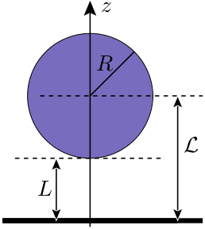

 In this master thesis, we study the Casimir effect in the plane–sphere geometry, in particular with respect to the effect of negative entropies. We show that the Maxwell equations in vacuum are equivalent to the source-free vector Helmholtz equation and introduce the plane wave basis and the multipole basis as solutions. Moreover, we present the solutions to the scattering problems of electromagnetic waves at a planar, homogenous interface and at a sphere, where the metallic properties of plane and sphere are either described by the Drude model, the plasma model or the model of perfect reflectors. With the Fresnel and Mie coefficients as well as the solutions of the Helmholtz equation at hand, we apply the scattering approach to the plane–plane and to the plane–sphere geometry. Although equivalent to the matrix elements of Durand et al., our matrix elements of the scattering matrix in the plane--sphere geometry avoid Wigner D-matrix elements. After changing to scaled quantities the free energy for perfect reflectors depends only on temperature and separation. Also, we considered analytically the contribution to the free energy of the Matsubara frequency ξ=0, because this special case raises numerical problems. The software implementation of the formulas reveals several serious numerical problems, e.g. the problem of computing the determinant of a matrix whose elements differ by hundreds of orders of magnitude. We discuss these problems and present solutions for a fast and stable software implementation.
We compare our numerical results with the proximity force approximation (PFA) that links the unknown free interaction energy of arbitrary geometries to the well-known energy of the plane–plane geometry. We show that indeed the PFA becomes a good approximation in the limit of small separations. As entropies obtained using the PFA are always positive, we conjecture that the effect of negative entropies vanishes for small separations. This assumption is strengthened by the study of the large–distance limit. We derive an analytical expression for the free energy in the limit of large separations and show that the negative entropies are linked with a change of polarization within a round trip. For low temperatures we show that the entropy as a function of the separation has a minimum and probably tends to zero for small separations. As the matrix elements of the scattering matrix become independent of the particular properties of the material in the high temperature limit, we study this limit for perfect reflectors as well as for Drude mirrors. We rule out several suggestions for the free energy at small separations and proof the validity of an expansion Bimonte and Emig. At last, we show that negative entropies exist over a wide range of parameters. In accordance with previous assumptions, we find that negative entropies disappear for small separations. The smaller the separation the lower is the temperature at which the entropy becomes positive. This means that the effect of negative entropies is more evident for large separations. In contrast to this, at the same time the Casimir effect becomes less pronounced for large separations.
The implementation is licensed under the terms of the GNU General Public License v2 and is available at github. However, if you use this program for publications, please consider to cite my work.
If you use Linux or Unix, you need the gcc and development libraries and header files for the standard C library. On a Debian-like Linux the commands
$ sudo apt-get install gcc libc6-dev make
$ make